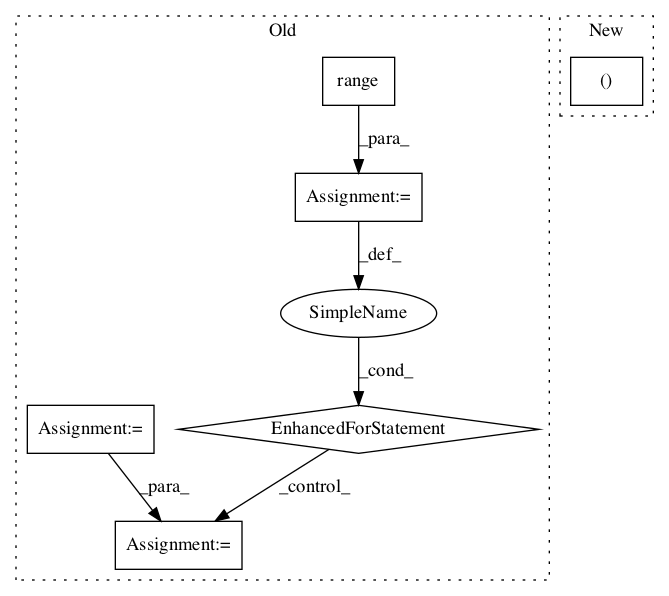

8cdbb1637b140c01f431831e7b2c2a63afc96209,kapre/time_frequency.py,Spectrogram,call,#Spectrogram#Any#,139

Before Change
return input_shape[0], self.n_filter, self.n_frame, self.n_ch
def call(self, x):
output = self._spectrogram_mono(x[:, 0:1, :])
if self.is_mono is False:
for ch_idx in range(1, self.n_ch):
output = K.concatenate(
(output, self._spectrogram_mono(x[:, ch_idx : ch_idx + 1, :])),
axis=self.ch_axis_idx,
)
if self.power_spectrogram != 2.0:
output = K.pow(K.sqrt(output), self.power_spectrogram)
if self.return_decibel_spectrogram:
output = backend_keras.amplitude_to_decibel(output)
After Change
// this is needed because tf.signal.stft lives in channels_first land.
if self.input_data_format == "channels_last":
signals = tf.transpose(signals, perm=(0, 2, 1)) // (batch, ch, time)
stfts = tf.signal.stft(
signals=signals,
In pattern: SUPERPATTERN
Frequency: 3
Non-data size: 6
Instances
Project Name: keunwoochoi/kapre
Commit Name: 8cdbb1637b140c01f431831e7b2c2a63afc96209
Time:
Author: null
File Name: kapre/time_frequency.py
Class Name: Spectrogram
Method Name: call
Project Name: tensorflow/hub
Commit Name: 20f388cfe01635a2073723c5c4ffd6dd7a87fbb2
Time:
Author: null
File Name: tensorflow_hub/tools/module_search/utils.py
Class Name:
Method Name: knn_errorrate_loo
Project Name: tensorflow/hub
Commit Name: 20f388cfe01635a2073723c5c4ffd6dd7a87fbb2
Time:
Author: null
File Name: tensorflow_hub/tools/module_search/utils.py
Class Name:
Method Name: knn_errorrate